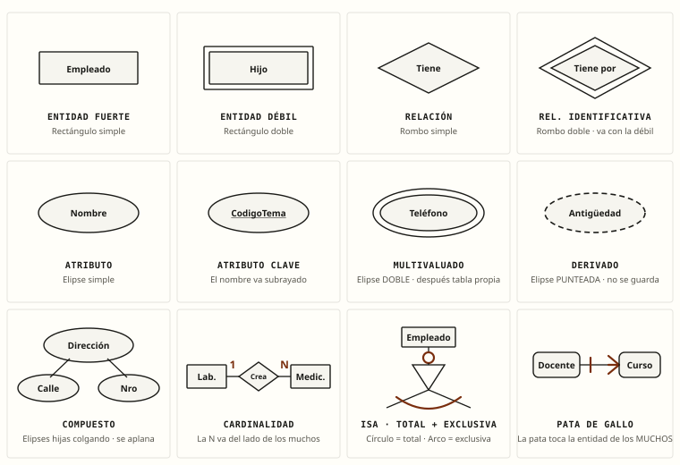

Referencia 04 · Para imprimir · Llevar al escritorio, no al parcial
Notación DER a mano
El docente avisó que la notación va de memoria, porque no van a tener la herramienta que dibuja sola. Esta hoja es la tabla de símbolos completa, con la notación de la cátedra. Copiala a mano tres veces y se acabó el tema.
ALa tabla de símbolos

| Elemento | Símbolo | Regla de mano |
|---|---|---|
| Entidad fuerte | Rectángulo simple | Sustantivo en singular. |
| Entidad débil | Rectángulo doble | Dibujá dos rectángulos, uno adentro del otro. |
| Relación | Rombo | Verbo. El nombre va adentro del rombo. |
| Relación identificativa | Rombo doble | Siempre acompaña a una entidad débil. Si dibujaste una débil sin rombo doble, te falta la mitad. |
| Atributo | Elipse colgada de la entidad | Una línea simple hasta el rectángulo. |
| Atributo clave | Elipse con el nombre subrayado | Subrayar, no poner asterisco. El asterisco es de la notación UML. |
| Multivaluado | Elipse doble | Doble elipse en el DER; tabla propia en el relacional. |
| Derivado | Elipse punteada | Se dibuja en el DER; no se guarda como columna. |
| Compuesto | Elipse con elipses hijas colgando | En el relacional se aplana: una columna por hija, la madre desaparece. |
| Cardinalidad | 1 / N sobre la línea | El número va del lado de la entidad a la que le corresponde esa cantidad. |
| Especialización | Triángulo ISA | Círculo = total. Arco = exclusiva. Sin marca = parcial / solapada. |
| Pata de gallo | Tres puntas | La pata toca la entidad del lado de los muchos. |
BLos cuatro que se confunden
Doble rectángulo vs. doble rombo Van juntos, siempre. La entidad débil se dibuja con rectángulo doble y la relación que la identifica con rombo doble. Es un par; no existe uno sin el otro. Ejemplo de la cátedra:Empleado —1— (Tiene por) —N— Hijo, conHijoen doble rectángulo (Clase 2, slide 10).
Doble elipse vs. elipse punteada Doble = multivaluado (muchos valores: los teléfonos). Punteada = derivado (se calcula: la antigüedad). Son dos cosas completamente distintas y las dos aparecen en el TP1. La punteada es "fantasma" — de ahí que la línea esté cortada.
CEl atributo derivado: qué es y para qué se usa
El docente lo dio como pregunta teórica explícita: "atributo derivable: qué es y para qué se usa". Las dos partes, no sólo la primera.
Clase 2, slide 12 · textual "Existe otro tipo de atributo, que es el derivable, cuya característica es que puede ser obtenido a través de un cálculo realizado a partir de otro atributo que conocemos. Por ejemplo, el atributo Edad de un Asistente puede ser obtenido a partir de su Fecha de Nacimiento, que es un atributo que conocemos."
Para qué se usa — la parte que la gente no contesta:
- Documenta un requerimiento sin duplicar el dato. El usuario pidió ver la antigüedad. Si no la dibujás, en la revisión parece que te la olvidaste.
- Deja asentado de qué otro atributo se obtiene. Dibujar "antigüedad" punteada al lado de "fecha de ingreso" dice, sin texto, que una sale de la otra.
- Evita la redundancia y la anomalía de actualización. Si guardaras la edad como columna, mañana está desactualizada. Se calcula en el momento de la consulta.
Trampa nº 1 del docenteEs el error que nombró primero en la lista de los que ven siempre: "Modelar los campos calculados. Si la tabla trae el precio y un total que es la multiplicación, ese campo derivado no va cuando se pasa a las tablas normalizadas. Si lo ponen, está mal."
Fijate que la trampa tiene dos mitades y van en sentidos opuestos:
- En el DER: SÍ se dibuja, con elipse punteada. Si no lo dibujás, perdiste el requerimiento.
- En el relacional: NO va como columna. Si lo ponés, está mal.
Los candidatos que aparecen en casi todos los enunciados de la cátedra: antigüedad (TP1), edad (TP2), fecha esperada de devolución (TP4), precio del renglón / total (normalización). Cuando el enunciado te menciona el dato al lado del dato del que sale, es derivado. Siempre. Y escribí al margen de qué deriva: eso es lo que te da el punto completo.
DSobre la pata de gallo
Cuidado con el peso que le das. La cátedra dedica tres slides (17, 18 y 19) a las "notaciones alternativas", y arranca aclarando que "no existe una notación única que sea aceptada por todos los autores". La pata de gallo aparece ahí, como alternativa:
Clase 2, slide 19 · textual "Este enfoque con diagramas más cercanos a UML utiliza rectángulos con puntas redondeadas para representar las entidades, señalando los identificadores únicos anteponiendo asteriscos a los atributos que forman parte del mismo, y las relaciones toman la forma de los diagramas de Pata de Gallo para representar la razón de cardinalidad."
Dibujá en Chen — rectángulo, rombo, elipse, con 1 y
N sobre las líneas. Es la notación de los slides 8 a 27, la del TP1 y la de
la resolución de la cátedra. La pata de gallo tenés que reconocerla y saber
dónde va la pata, porque el docente lo nombró; no tenés que diagramar en ella.
Dónde va la pata La pata de tres puntas toca la entidad del lado de los "muchos". Un trazo perpendicular simple significa "uno". Regla de lectura: parate en una entidad, mirá el símbolo del extremo opuesto de la línea, y ése te dice cuántas de aquéllas le corresponden a ésta.
EChecklist antes de entregar el DER
- ¿Toda entidad tiene su clave subrayada?
- ¿Toda relación tiene cardinalidad escrita en los dos extremos?
- ¿Los teléfonos (o lo que se repita) están en doble elipse?
- ¿Los calculados están en punteada y anoté de qué derivan?
- ¿La dirección (o similar) está descompuesta como compuesto?
- ¿Cada entidad débil tiene su rombo doble?
- ¿Marqué el círculo y el arco en cada ISA, y lo justifiqué al margen?
- ¿Releí la lista de consultas del final? Ahí se esconden atributos obligatorios — en el TP1, el código postal aparece sólo ahí.
- ¿Hay alguna nota al pie o viñeta posterior que reubique un dato en otra entidad? En el TP1 el farmacéutico parece colgar de la farmacia y un bullet después lo manda a Ciudad.
- ¿Escribí al margen los supuestos que tomé? Un supuesto escrito es defendible; uno silencioso parece un error.
raw/B Clase 2 Diseño Conceptual Udeci.pptx — slides 8 a 16
(entidad, débil, multivaluado, derivable, unaria, historia), 17 a 19 (notaciones
alternativas), 20 a 27 (especialización). Las mismas figuras están en
raw/Material_Examen/unidad 2.pdf.
Todos los símbolos de esta hoja fueron leídos de las imágenes del PPTX, no
reconstruidos de memoria ni tomados de Rta-TP-Farmacia.erdplus, que tiene
errores conocidos.